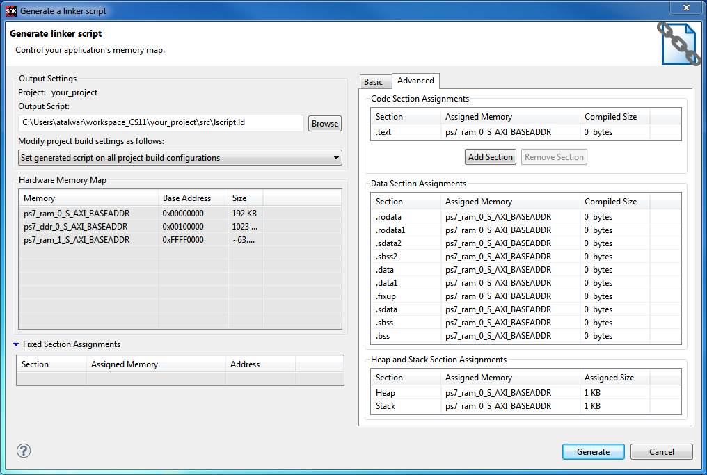

If you require more control over the definition of memory sections and assignments to them,
use the LinkerScript Generator dialog box Advanced tab.
- Code Section Assignments: Typically there will be only one code section,
.text, unless you specifically created other code sections. All the code sections will
appear in this region.
- Data Sections Assignments: The compilers automatically generate a number of
different types of data sections including read-only data (rodata), initialized data
(.data),a nd uninitialized data (.bss).
- Heap and Stack Section Assignments: Use this area to map the heap and stack
onto memory and define their sizes.
- Heap Size: Specify the heap size. Even if a programmer doesn't use dynamic
memory allocation explicitly, there are some functions that use the heap such as printf().
It is a good idea to allocate a few K for such functions, as a precaution.
- Stack Size: Specify the stack size. Remember that the stack size grows down in
memory and could overrun the heap without warning. Make certain that you allocate enough
memory, especially if you use recursive functions or deep hierarchies.
